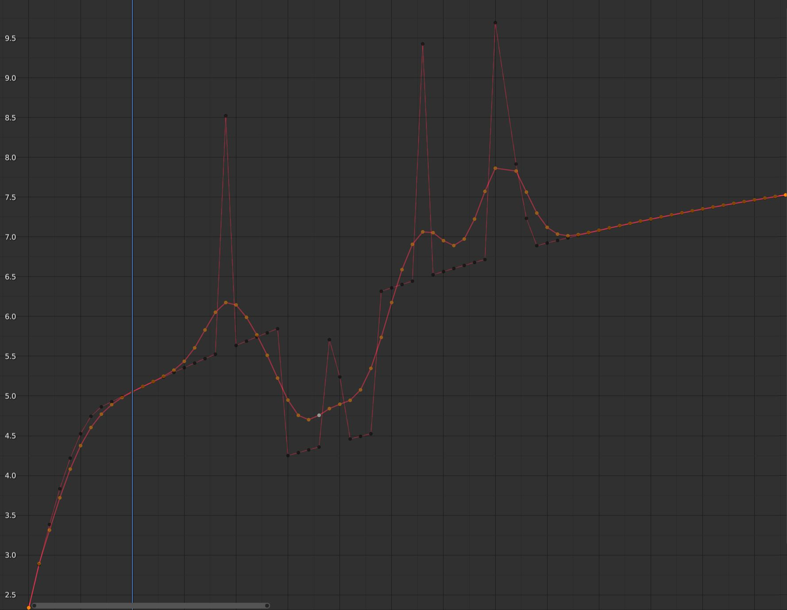

An F-Curve can be edited by transforming the locations of the keyframes.
Move, Rotate, Scale
Like other elements in Blender, keyframes can be
moved, rotated, or scaled as described in
Basic Transformations.
Extend
Moves keyframes relative to the current frame.
If the mouse is to the left of the Playhead,
this operator only affects the selected keyframes that are to the left of the Playhead.
On the contrary, if the mouse is to the right of the Playhead,
this operator only affects the selected keyframes that are to the right of the Playhead.
Tip
For precise control of the keyframe position and value,
you can set values in the Active Keyframe of the Sidebar region.
Inserts a keyframe to the active F-Curve at the mouse position.
The newly added keyframes will be selected, making it easier to quickly tweak the newly added keyframes.
All previously selected keyframes are kept selected by using I.
Type
All Channels:
Insert a keyframe on all visible and editable F-Curves using each curve’s current value.
Only Selected Channels:
Insert a keyframe on selected F-Curves using each curve’s current value.
Only Active F-Curve:
Insert a keyframe on the active F-Curve using the curve’s current value.
Active Channels at Cursor:
Insert a keyframe for the active F-Curve at the cursor point.
Selected Channels at Cursor:
Insert a keyframe for selected F-Curves at the cursor point.
Use Ctrl-C to copy selected keyframes and Ctrl-V to paste the previously copied keyframes.
During the paste action, the Adjust Last Operation panel provides some options in
how the paste is applied.
Frame Offset
No Offset:
Pastes the keyframes in the location they were copied from.
Frame Relative:
Pastes the keyframe relative to the current frame based on the locations of
the keyframes relative to the current frame when they were copied.
Frame Start:
Pastes the keyframes with the first keyframe of the copied set placed at the current frame.
Frame End:
Pastes the keyframes with the last keyframe of the copied set placed at the current frame.
Value Offset
No Offset:
Pastes the keyframes with the value they were copied from.
Cursor Value:
Paste the keyframes at the 2D cursor as a starting point.
Current Frame Value:
Paste keyframes relative to the value of the curve under the cursor.
Right Key:
Paste keyframes such that the last frame matches the key value right of the cursor.
Left Key:
Paste keyframes such that the first key matches the key value left of the cursor.
Type
Mix:
Integrates the pasted keyframes in with existing keyframes only overwriting keyframes that share a frame.
Overwrite All:
Removes all previous keyframes and replaces them with the pasted keyframes.
Overwrite Range:
Overwrite keys in pasted range.
Overwrite Entire Range:
Overwrite keys in pasted range, using the range of all copied keys.
Flipped
Paste keyframes from mirrored bones if they exist.
The Decimate tool simplifies an F-Curve by removing
keyframes that influence the curve shape the least.
Mode
Controls which method is used pick the number of keyframes to use.
Ratio:
Deletes a defined percentage of keyframes,
the amount of keyframes to delete is define by the Remove property.
Error Margin:
Deletes keyframes which only allowing the F-Curve to change by a defined amount.
The amount of change is controlled by the Max Error Margin
which controls how much the new decimated curve is allowed to deviate from the original.
Removes redundant keys within the selection of keyframes.
Clean Keyframes resets the keyframe tangents on selected keyframes
to their auto-clamped shape, if they have been modified.
Tip
The modified curve left after the Clean tool is run is not the same as the original,
so this tool is better used before doing custom editing of F-Curves and after initial keyframe insertion,
to get rid of any unwanted keyframes inserted while doing mass keyframe insertion
(by selecting all bones and pressing I for instance).
Channels
Operate on selected channels and cleans them regardless of keyframe selection.
Deletes the channel itself if it is only left with
a single keyframe containing the default property value and
it’s not being used by any generative F-Curve modifiers or drivers.
Moves the selected keyframes to an in between position relative to the adjacent keyframes.
To use this operator, drag the mouse left or right to adjust the operator’s Factor property.
Factor
The amount to favor either the left or the right key. Values less than 0.5 favor the left keyframe,
values greater than 0.5 favor the right keyframe, a value of 0.5 results in no change.
Transitions the current keyframe with the neighboring keyframes in the timeline.
In order for this operator to work, there must be a keyframe before and after the current frame.
To use this operator, drag the mouse left or right to adjust the operator’s Blend property.
Blend
The amount to favor either the left or the right key. Values less than 0.5 favor the left keyframe,
values greater than 0.5 favor the right keyframe, a value of 0.5 results in no change.
Transitions the current keyframe towards the property’s default value.
To use this operator, drag the mouse left or right to adjust the operator’s Blend property.
Blend
The amount to favor either the current key or the default value.
A value of 0 represents the current key, a value of 1 represents the default value.
See also
The Reset to Default operator resets
any property to its default value without the need of keyframing.
Aligns selected keyframes to follow an exponential path between the first and last keyframes.
To use this operator, drag the mouse left or right to adjust the operator’s Blend property.
Blend
Changes the concavity of the curve. Values less than 0.5 cause keyframes to concave up,
values greater than 0.5 cause keyframes to concave down, a value of 0.5 results in a straight line.
Move the selected keyframes as a block so the first/last key align with the key before/after the selection.
Does nothing when there is no key before/after the current selection.
Offset Factor
At -1 the first key of the selection is aligned with the key just before the selection.
At 1 the last key is aligned with the key after the selection.
Blend the selected keys to a straight line formed by the two keys just outside the current selection.
The factor determines if the two keys left or right of the selection are used. If there are not
two keys in the given direction the operator will throw a warning and not change the keys.
Factor
Determines which slope to blend towards. At -1 will blend to the left slope, at 1 to the right.
Shear the keys based on the position of the keyframe selection ends.
Pressing D while the modal operator is active will toggle the anchor key
between the start and end of the selection.
Shear Factor
How much to shear and if it shears up or down. Negative values shear down, positive shear up.
Direction
From Left or From Right determine the anchor key from which to shear.
Scale the selected key segments to their average value. This differs from the regular scaling by being per segment.
That means selected keyframes on two different F-Curves will scale to different points.
This operator shifts the value of the keys in time, while keeping the actual key positions in the same place.
It supports wrapping, so when offsetting beyond the range of the F-Curve it will take values from the other end, but offset in y-value so there is no jump.
This works best with dense key data. Gaps in the keyframe data might cause data to get lost if it is shifted into the gaps.
There is also an option to smooth the selected curves, but beware: its algorithm seems to be
to divide by two the distance between each keyframe and the average linear value of the curve,
without any setting, which gives quite a strong smoothing! Note that the first and last keys
seem to be never modified by this tool.
Smooths the selected keyframes using a Gaussian kernel. It can handle gaps in the keyframe data.
The operator is modal with a blend factor, making it possible to tweak the strength of the filter.
Factor
A blend factor from original to filtered curve.
Sigma
The shape of the gaussian distribution. Lower values mean a sharper curve, giving keys that are close to each
other more weight. A high value behaves like a simple average filter.
Filter Width
A wider filter looks at more keyframes, producing a smoother result.
At a size of 1 the filter only looks at the keyframes to the immediate left and right for a weighted average.

F-Curve after applying the Gaussian Smooth with the original curve overlayed.
Smooth the selected keyframes using a Butterworth filter. This filter is ideal for
smoothing large amounts of data because it preserves the peaks of the animation.
The downside is that it can introduce a ripple effect when the key values change rapidly.
Frequency Cutoff
The lower the value the smoother the curve. There is an implicit maximum at which
the value no longer changes the curve which is at half the sample rate. The sample
rate in this case is the scene frame rate multiplied by the Samples per Frame of this operator.
Filter order
Higher values mean the frequency cutoff is steeper.
Samples per Frame
Before the filter is applied, the curve is resampled at this interval to avoid errors when there
are uneven spaces between frames. If keys are on subframes, e.g. a 60fps file in a 30fps scene,
increase this value to 2.
Blend
A 0-1 value to blend from original curve to filtered curve.
Blend In/Out
The number of frames at the start and end for which to blend between the filtered and unfiltered curve.
This can help reducing jumps in the animation at the selection border. At value 1 it only locks the first and
last frame of the selection to the original position.
4.0
Versions
Loading...
en
Languages
Loading...
Note
You are not using the most up to date version of the documentation.
is the newest version.